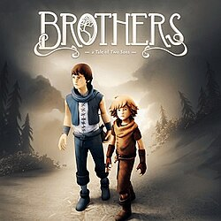

Brothers: A Tale of Two Sons é um jogo de aventura e puzzle desenvolvido pela Starbreeze Studios. O jogo acompanha dois irmãos que embarcam em uma jornada perigosa para encontrar a Água da Vida, um remédio capaz de salvar seu pai gravemente doente. Diferente de muitos jogos tradicionais, o jogador controla os dois personagens ao mesmo tempo, utilizando um controle para mover cada irmão separadamente. Essa mecânica cria desafios únicos de cooperação e resolução de puzzles ao longo da aventura. O gameplay mistura exploração, plataformas e interação com o ambiente, sempre incentivando o trabalho em equipe entre os irmãos. O jogo possui poucos diálogos compreensíveis, utilizando uma linguagem fictícia e apostando principalmente na narrativa visual e emocional. Os cenários apresentam um estilo artístico muito bonito, com florestas, cavernas, vilarejos e criaturas fantásticas espalhadas pelo caminho. A trilha sonora ajuda a reforçar os momentos emocionantes e a atmosfera da jornada. Conforme avançam, os irmãos enfrentam perigos, descobrem novas culturas e fortalecem ainda mais sua relação. No geral, Brothers: A Tale of Two Sons é lembrado como uma experiência emocional marcante e muito criativa em sua jogabilidade.
12+ - recomendado para maiores de 12 anos
A história de Brothers: A Tale of Two Sons começa quando dois irmãos descobrem que seu pai está gravemente doente e precisa de um remédio raro para sobreviver. Sem muitas opções, eles decidem deixar sua vila e iniciar uma longa jornada em busca da lendária Água da Vida, localizada em um lugar distante e perigoso. Durante a aventura, os irmãos atravessam diferentes regiões cheias de obstáculos, criaturas misteriosas e situações inesperadas. Cada um possui habilidades próprias, e o sucesso da jornada depende da cooperação constante entre os dois. Enquanto o irmão mais velho é mais forte e confiante, o mais novo demonstra inteligência e sensibilidade em vários momentos. Conforme avançam pelo mundo fantástico do jogo, os protagonistas conhecem pessoas que precisam de ajuda e enfrentam desafios emocionais que fortalecem sua relação familiar. A narrativa utiliza poucos diálogos tradicionais, permitindo que as emoções sejam transmitidas principalmente através das ações, animações e música. O jogo mistura momentos leves e divertidos com situações dramáticas e emocionantes. Ao longo da jornada, temas como família, amadurecimento, coragem e perda são explorados de forma sensível. A história é lembrada principalmente pelo forte impacto emocional causado em seus momentos finais, tornando a experiência muito marcante para diversos jogadores.
7 de agosto de 2013
Entre R$20 e R$80 (dependendo da plataforma e promoções)
Aproximadamente 2 GB